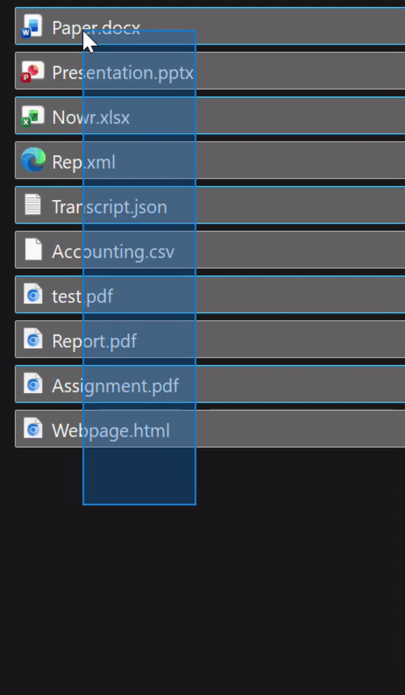
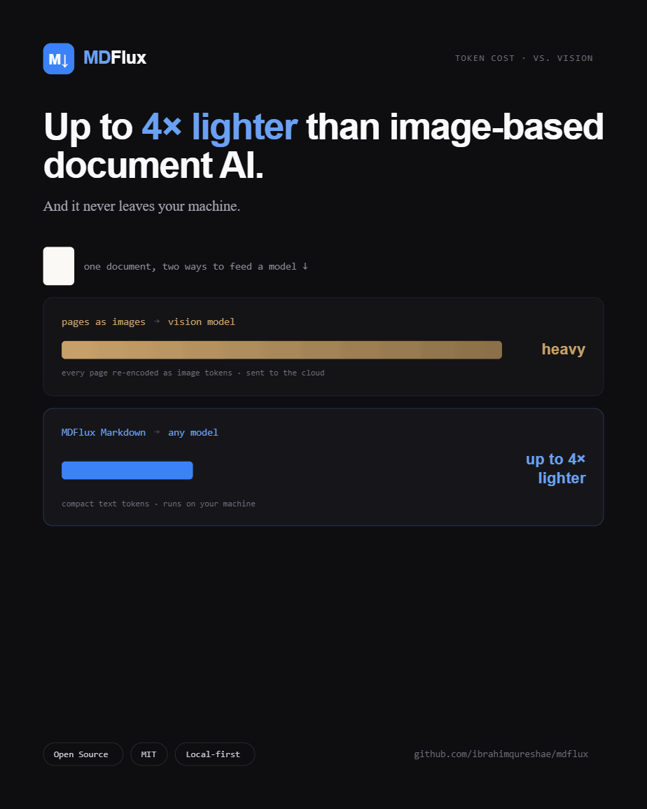
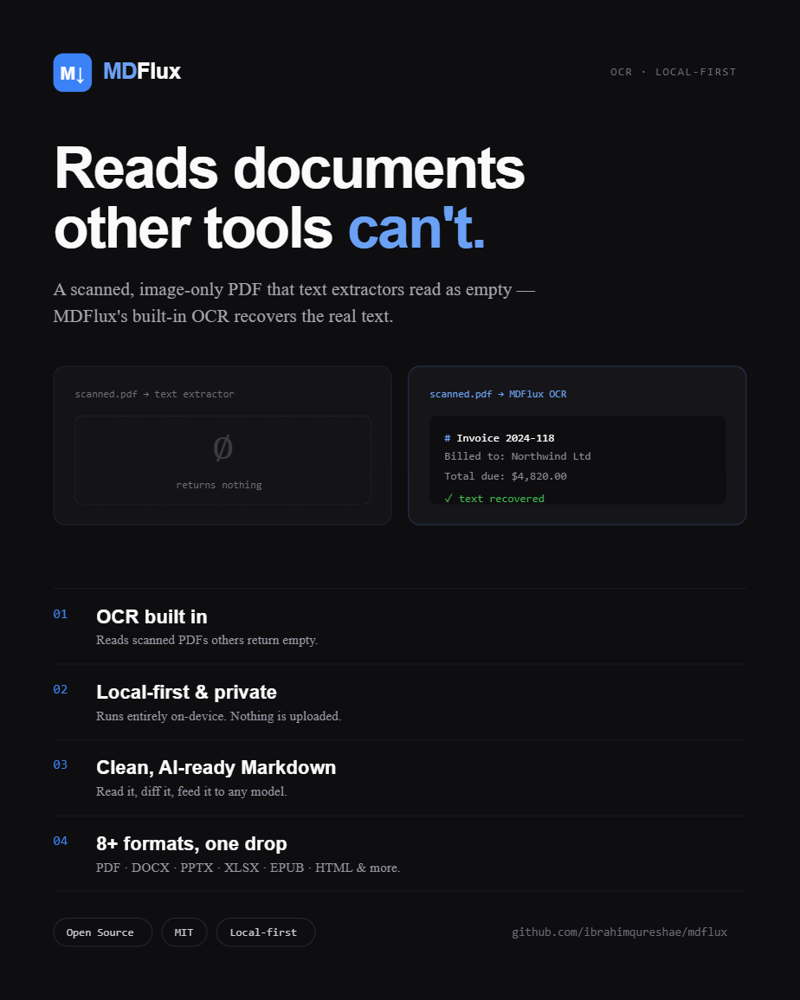
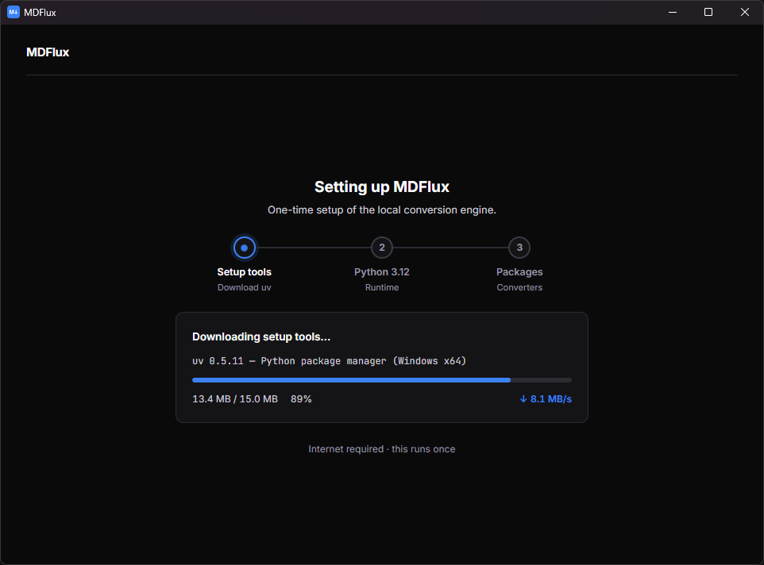
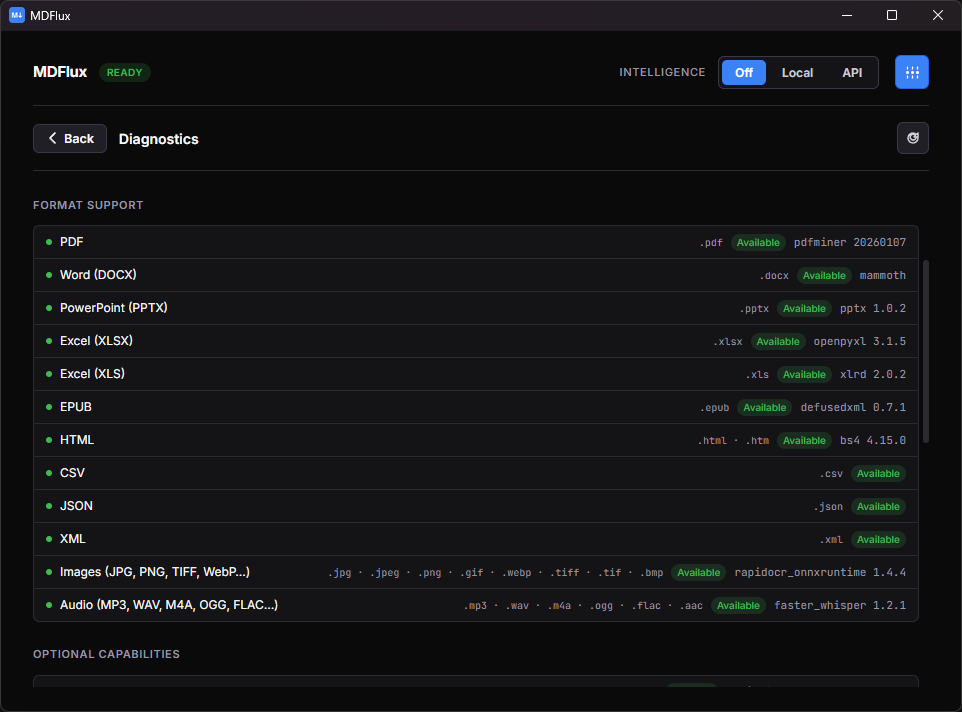
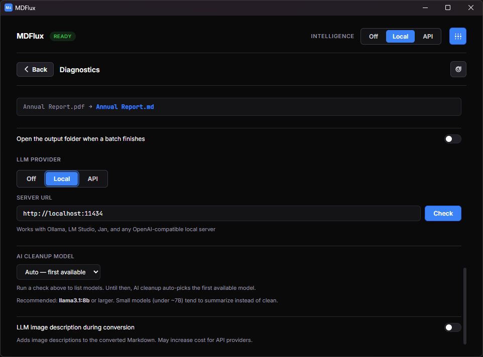
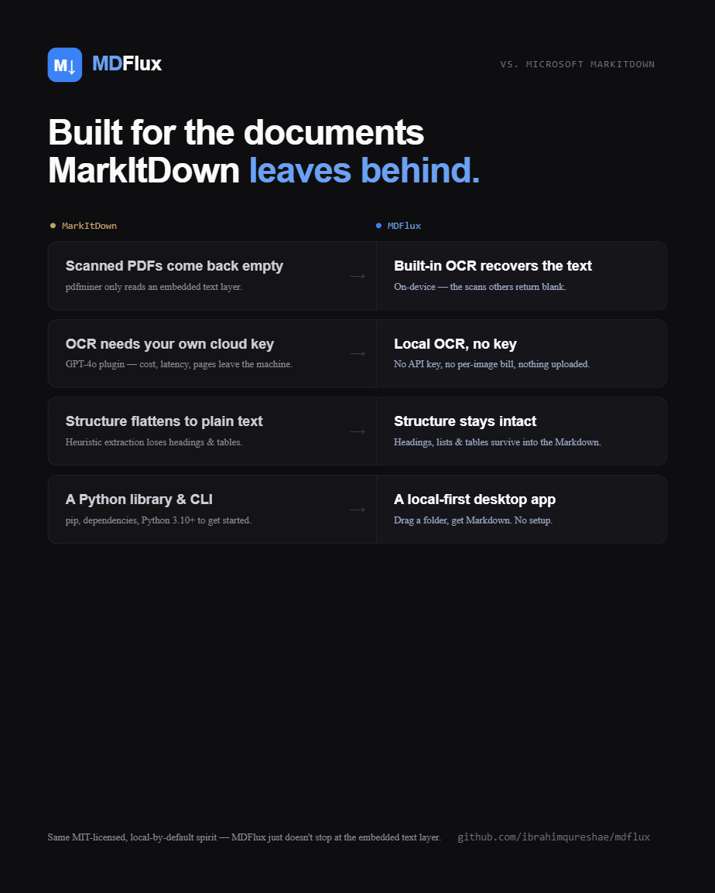

Converts documents into clean, AI-ready Markdown.
On your machine. No upload.
Works with PDF · DOCX · PPTX · XLSX · EPUB · HTML · CSV · JSON · XML · images · audio

Select. Convert. Done.

Grab a folder of mixed files. PDFs, Office docs, scans, web pages. No conversion settings to pick.

One drop turns the whole batch into AI-ready Markdown, locally. OCR recovers text from scans others read as empty.

Dependency health and diagnostics run on-device. See exactly what's installed and working.
About 2 to 6× fewer tokens than a vision model.
Every time a document gets read by an LLM, you pay for it in tokens. Sending pages as images is an expensive way to spend them. MDFlux hands the model clean Markdown instead, and the saving lands on every single call that reads the document.
You pay for pixels, not words. A page sent to a vision model as an image costs a fixed chunk of tokens, often well over a thousand, no matter how little text is on it. The same page as Markdown is usually a few hundred.
Plain text tokenizes efficiently. Markdown is just text, with no image data, no markup bloat, no base64 blobs.
Clean beats raw. MDFlux strips the broken layout, repeated whitespace, and junk that pad out messy extractions, so you don't spend tokens on noise.
Structure stays compact. Headings, tables, and lists carry the document's meaning in very few tokens.
It compounds. The saving lands on every single call that reads the document, across a whole pipeline or batch.
Point a plain extractor at a scanned, image-only PDF and you get zero usable text. MDFlux's OCR recovers it, and even then stays lighter than the vision route.
| Scanned, image-only PDF | Usable tokens |
|---|---|
| Plain text extractor | 0 |
| Vision model (page as image) | 10,731 |
| MDFlux (OCR → Markdown) | 1,893 |
Full text recovered in about 5.7× fewer tokens than the vision model, which still has to OCR the image on its end anyway.

Everything around the engine that makes it usable.
Built on Microsoft's MarkItDown. What MDFlux adds is the OCR, the desktop app, the batching, the reliability, and the privacy-by-default packaging.

Fewer tokens, lower cost
Clean Markdown costs about 2 to 6× fewer tokens than sending pages to a vision model. Every LLM call that reads the document is cheaper.
Local and private
Your documents never leave your machine. No cloud, no API key, no account.
Reads scanned PDFs
Built-in OCR recovers text that plain extractors return as zero characters.
Real structure
Proper Markdown with headings, tables, and lists intact. Readable, greppable, diff-able.
No terminal needed
Portable app. Unzip, run, click through a one-time setup. Done.
Many formats
PDF, DOCX, PPTX, XLSX, EPUB, HTML, CSV, JSON, XML, images, and audio.
Batch a whole folder
Convert everything at once, with progress, cancellation, and per-file diagnostics.
Optional cleanup
Off, rule-based, or a local AI pass to tidy up messy extractions.
Select. Convert. Done, all on your machine.
The first launch sets up a private, self-contained Python environment (one time, needs internet). Every conversion after that runs fully offline.
A one-time, self-contained setup.
MDFlux provisions its own private Python 3.12 environment on first launch. After that it runs fully offline, every time. No terminal, no admin rights, no manual installs.

Drop → clean Markdown.
One drop turns a file or a whole batch into AI-ready Markdown, locally. OCR recovers text from scans that other tools read as empty. Cancel any time, with progress per file.
Everything local & checked.
Dependency health and diagnostics run on-device. You see exactly what's installed and working, and a clear next step instead of a silent empty file when something's off.

Off, rule-based, or a local AI pass.
Tidy up messy extraction, or don't. The default is Off: no LLM, fully offline. You decide per run, per batch. Nothing is forced on you.

Off default
No LLM. Raw MarkItDown output, exactly as the engine produced it. Fully offline, zero compute overhead.
Rule-based offline
Deterministic cleanup passes, fix broken tables, collapse whitespace, normalise headings. No LLM, no surprise rewrites, always the same output.
Local AI Ollama · offline
An optional pass through a model running on your machine via Ollama. Still offline, still private. Bring your own model, the app doesn't manage weights in v1.
API bring-your-own-key
For when you want a frontier model's cleanup. OpenAI-compatible client, your key, your cost. Clearly marked, never the default, never required.
MDFlux vs Microsoft MarkItDown.
MDFlux is built on MarkItDown, which is a genuinely great conversion library. The point isn't to beat the engine, it's to make that engine genuinely usable day to day.
| MarkItDown | MDFlux | |
|---|---|---|
| Core conversion engine | yes | yes (uses MarkItDown) |
| Scanned / image-only PDFs | ≈ 0 characters | built-in OCR recovers text |
| Install and run | pip + terminal | portable app, no terminal |
| Dependency setup | manual | sets itself up on first launch |
| Batch a whole folder | write your own script | built in, concurrent, with progress |
| Timeouts and cancel | can hang, no feedback | streams progress, cancellable |
| Cleanup modes | raw output | Off, rule-based, or local AI |
| Preview & diagnostics | none | rendered preview + health panel |
| Audio transcription | plugin or Azure | local, built in |
| Privacy | local if you wire it up | local by default |

Built for anyone who feeds documents to a model.
AI & RAG builders
Feed clean, structured source documents to any model instead of raw text or pricey vision tokens.
Researchers
Batch-convert papers, reports, and scanned archives into searchable Markdown.
Developers
Get diff-able, version-controllable text out of binary document formats.
Writers & analysts
Pull clean copy out of PDFs and Office files without the formatting mess.
Privacy-conscious
Convert sensitive contracts, records, and decks with nothing ever uploaded.
One app, most of your files.
- PDF incl. scanned · OCR
- EPUB
- TXT
- Markdown
- DOCX
- PPTX
- XLSX
- HTML
- CSV
- JSON
- XML
- Audio → transcript local
- OCR on images local
Download for Windows. Free. MIT-licensed.
Portable zip. No installer, no admin rights, no account, no cloud.
⬇ Get MDFlux